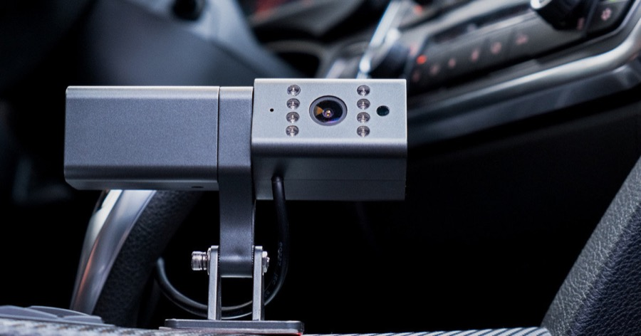

Teltonika
DualCam
Budget · add-on to a Teltonika trackerFront + cabin camera on RS232 to an FMB125 / FMC125 / FMx225 / FMC650 tracker. 720p, H.265, microSD up to 64 GB (about 72 h). Closest fit to the Teltonika trackers we already accept.
≈ QAR 200 – 220
AUD 79.05 ex GST / AUD 86.96 incl. GST (PB Tech AU); NZD 94.12 ex GST (PB Tech NZ). Tracker sold separately.